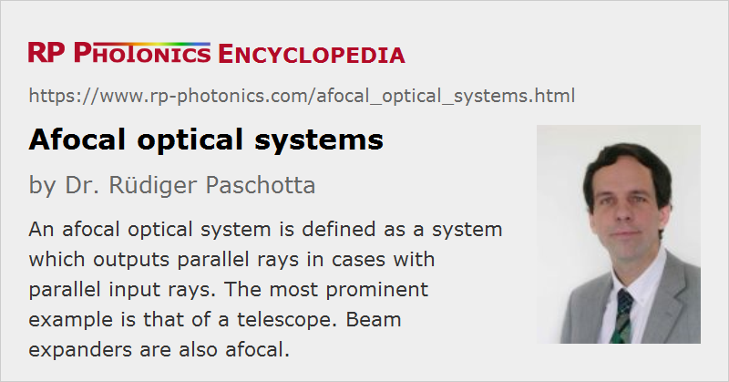

Afocal Optical Systems
Definition: optical systems which output parallel rays for parallel input rays
Alternative term: telescopic systems
German: afokale optische Systeme
Categories: general optics, vision, displays and imaging
How to cite the article; suggest additional literature
Author: Dr. Rüdiger Paschotta
Based on geometrical optics, an afocal optical system is defined as a system which outputs parallel light rays in cases with parallel input rays. Concerning the ABCD matrix of the system, this implies than the matrix component C is zero. Such a system has no focal length, no focal points, no nodal points and no principal planes.
Other optical systems, not being afocal, are called focal or sometimes non-afocal.
The simplest example is a system with no focusing elements, but only free space, or space filled with a homogeneous optical medium. Here, we have A = D = 1 in addition to C = 0.
The probably most prominent example is that of a telescope in its most basic configuration – a combination of two focal components (e.g. lenses). Such a telescope can be used for viewing distant objects, sending approximately parallel rays to the instrument, and the then also parallel output rays are sent to the observing eye (accommodated to infinite distances), where they are finally focused to the retina. Figure 1 shows two common realizations of refractive telescopes. Other realizations are based on curved mirrors or on prisms, e.g. in the form of anamorphic prism pairs.

Such an afocal telescope can not only be used as an optical addendum to the eye, but also in combination with a photo camera or an infrared viewer, for example. It then provides some amount of magnification, and at the same time there is a reduction of the field of view.
The term telescopic systems is often used for afocal systems, as the telescope is the classical example.
Beam expanders are also afocal systems. Considered in the context of wave optics, such a beam expander converts a collimated input laser beam into a collimated output beam with increased beam radius. By turning it around, one can also have the beam radius decreased. In some cases, such a beam expander is used within a laser resonator, for example in order to obtain a larger mode radius in the laser crystal.
Questions and Comments from Users
Here you can submit questions and comments. As far as they get accepted by the author, they will appear above this paragraph together with the author’s answer. The author will decide on acceptance based on certain criteria. Essentially, the issue must be of sufficiently broad interest.
Please do not enter personal data here; we would otherwise delete it soon. (See also our privacy declaration.) If you wish to receive personal feedback or consultancy from the author, please contact him e.g. via e-mail.
By submitting the information, you give your consent to the potential publication of your inputs on our website according to our rules. (If you later retract your consent, we will delete those inputs.) As your inputs are first reviewed by the author, they may be published with some delay.
See also: ABCD matrix, geometrical optics, telescopes
and other articles in the categories general optics, vision, displays and imaging
|  |
If you like this page, please share the link with your friends and colleagues, e.g. via social media:
These sharing buttons are implemented in a privacy-friendly way!